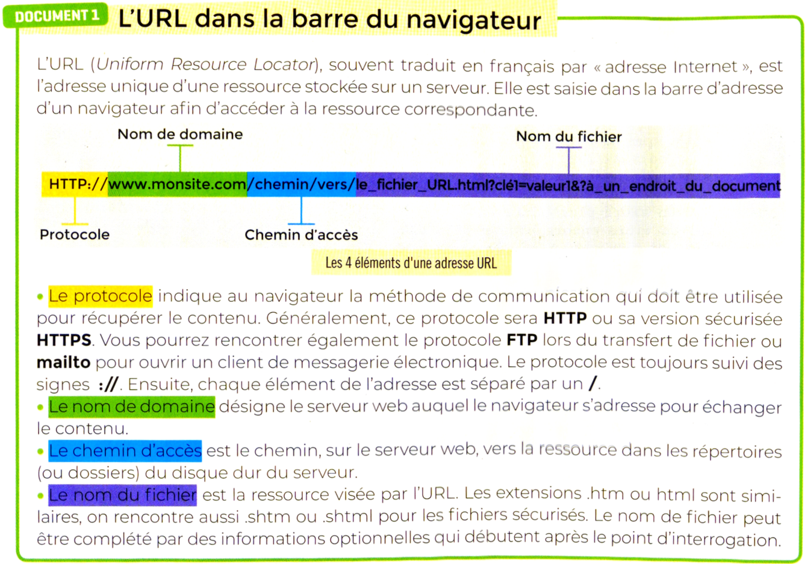
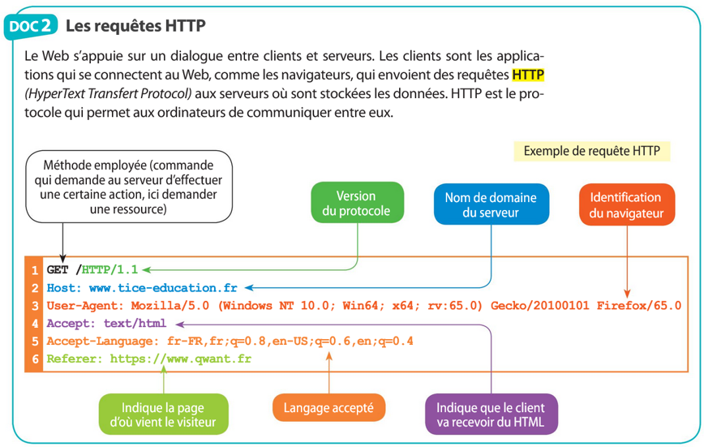
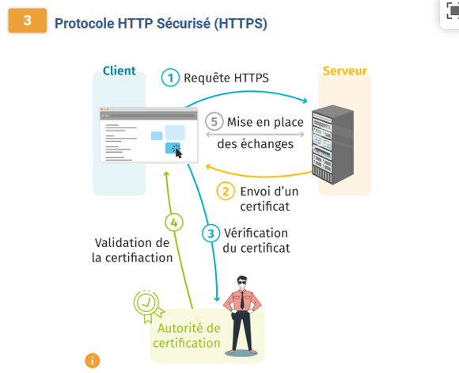
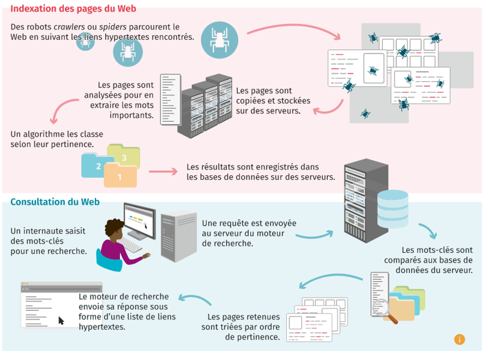
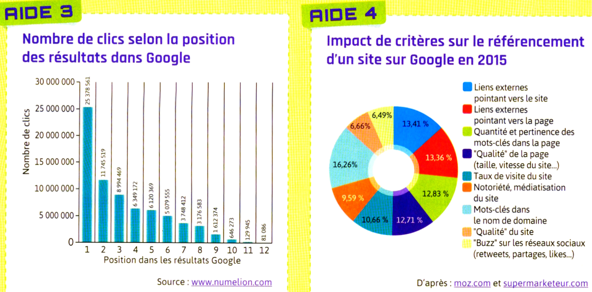
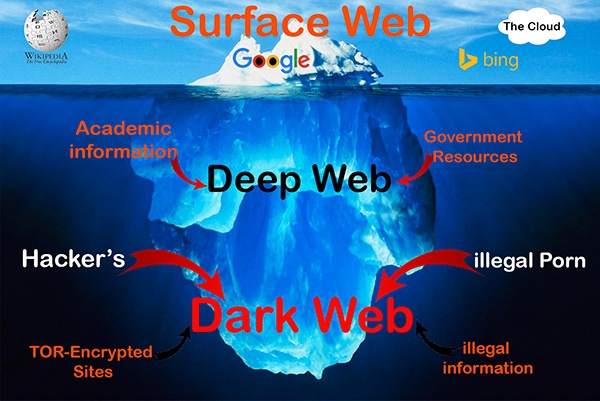
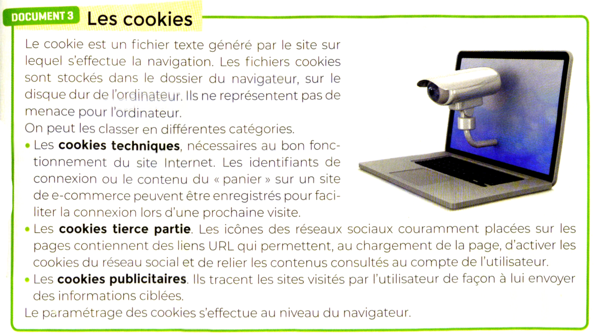
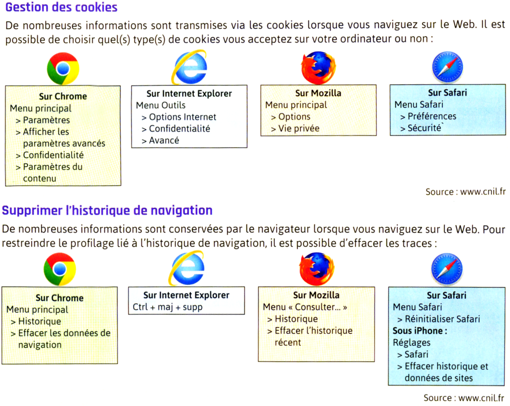
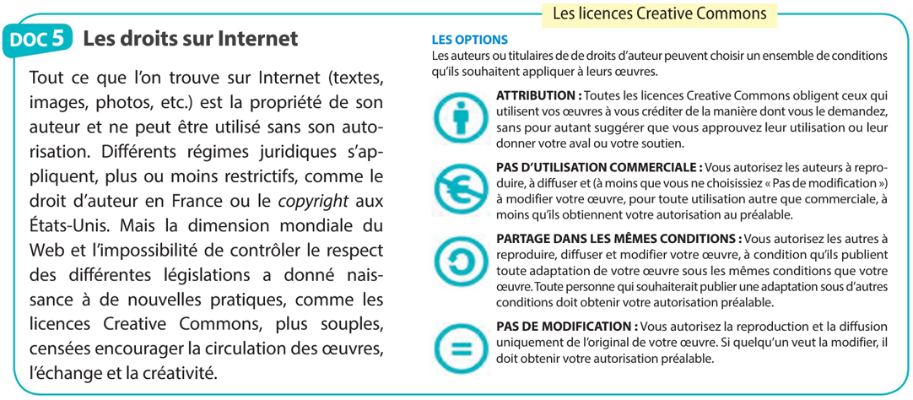
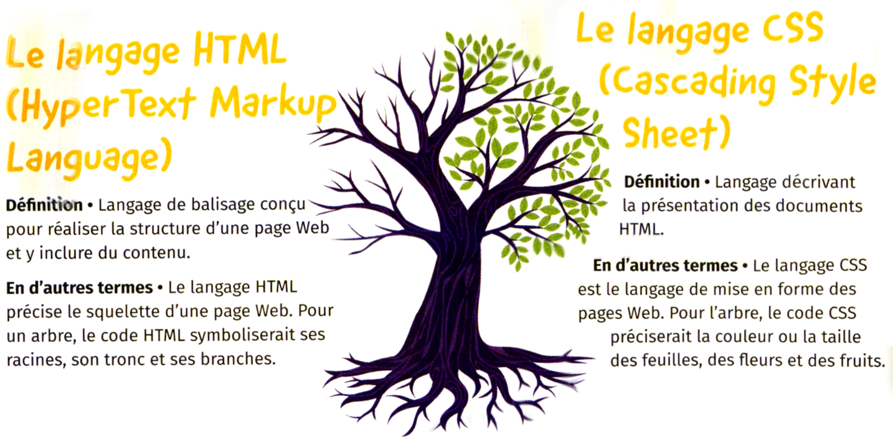

Nota : 1,92 en 2022.
Lien vers "Tester ses connaissances" du manuel Delagrave : lien
Vidéo Delagrave P58-59 : histoire du Web
Le Web est un ensemble de ressources liées entre elles par des liens hypertextes, accessibles en se connectant à Internet.
Le Web est la partie apparente d’Internet, qui permet de naviguer entre des images, des vidéos et du texte. Si Internet était un musée, le Web désignerait les œuvres qui y sont exposées.
Un lien hypertexte est un élément placé dans le contenu d'une page Web et qui permet, en cliquant dessus, d'accéder à un autre contenu sur le même site Web (lien interne) ou à un site Web différent (lien externe).
Nota : 1,92 en 2022.
Pour « surfer » sur le Web, un navigateur est nécessaire. C’est un logiciel permettant d'afficher des sites, télécharger des fichiers et
faire des recherches.
Ex de navigateur : Mozilla Firefox ; Google Chrome ; Internet Explorer …

A ne pas confondre avec :

Les noms de domaine les plus populaires en 2022 :

Une requête http (HyperText Transfer Protocole) d’un client consiste à soumettre des informations ou des demandes au serveur sur lequel est hébergée une page Web.
En retour, le serveur envoie aux clients une réponse http.
Ces requêtes et ces réponses sont accompagnées de nombreuses données sur le client et sur les serveurs appelés en-têtes (ou headers).

Source F Junier

L’HyperText Transfer Protocole Secure (https) est la version sécurisée de la connexion http.
Elle protège les données échangées en ne les rendant compréhensibles que par le destinataire, grâce au protocole TLS (Transport Layer Security)
qui chiffre les données.
Pour s’assurer que le serveur destinataire est bien celui qu’il prétend, le https authentifie la cible grâce aux certificats SSL (Secure Socket Layer).

Vidéo Les chroniques du Dr Nozman
Part de marché des moteurs de recherche en 2025 :



L'algorithme de Google: le PageRank :
Activité PageRank

Le web surfacique, désigne l'ensemble des sites et des pages accessibles via la plupart des moteurs de recherche couramment utilisés.
Le deep web ou web profond désigne l'ensemble des sites et des pages non indexées sur internet ; c'est-à-dire les contenus qui ne peuvent pas être découverts par la plupart des moteurs de recherche. Il s’agit des pages bloquées par un mot de passe ( contenus payants, comptes bancaires, emails, etc.), des pages non répertoriées par leurs créateurs, des pages dynamiques ou inaccessibles via l'arborescence du site, ou encore des fragments de données qui ne sont pas indexés dans le cas des pages volumineusesp.


Vidéo MisterHoodie :
Gestion des cookies :


